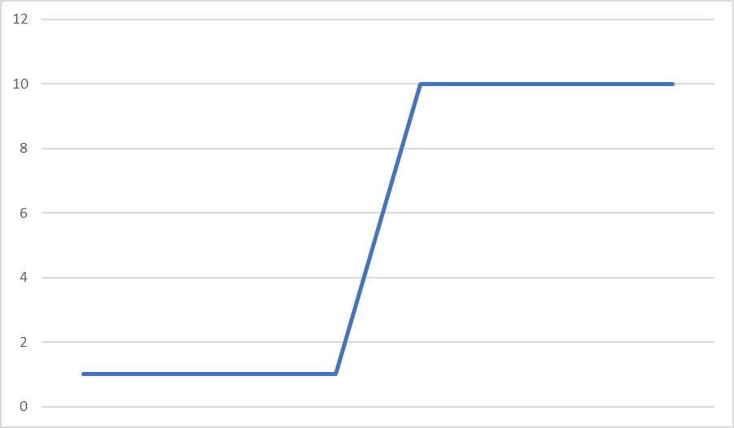
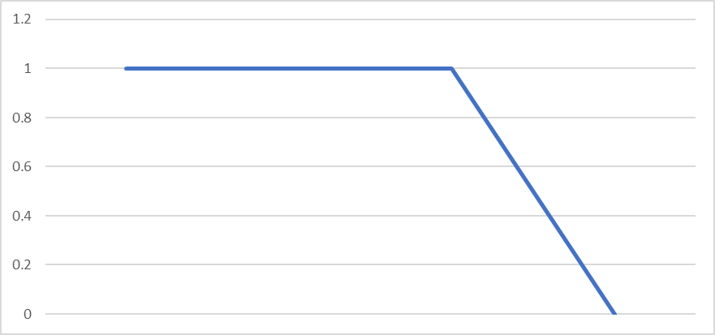
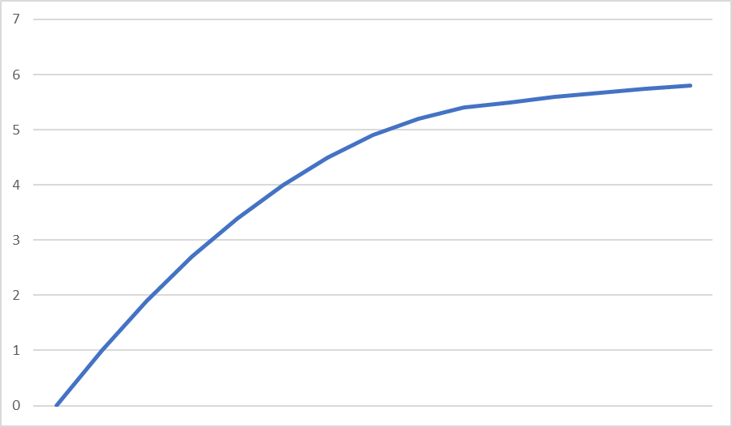
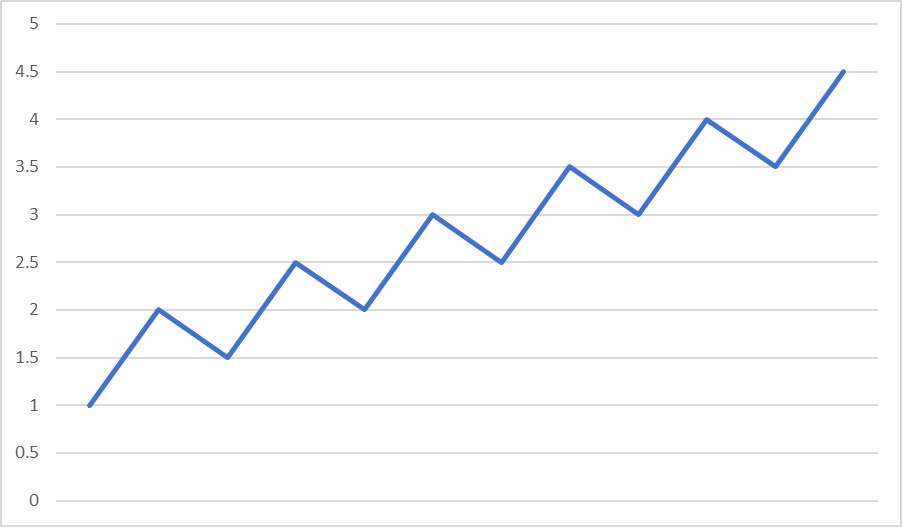

Originalmente escrito el 2022-02-01
“El hombre que solo tiene un martillo, ve todo como si fuera un clavo”
“Si una empresa necesita una nueva herramienta y aún no la compra, ya está pagando por ella”
En sistemas complejos, como lo es el mundo, ni las soluciones, ni los problemas se reducen a un solo tema. Para solucionar problemas del mundo, debemos adquirir conocimiento del mundo. El conocimiento que hemos construido a lo largo de nuestra historia ha funcionado porque podemos relacionar unas áreas con otras (i.e. medicina y canto, medicina y deporte, física y matemáticas, etc.).
Debemos esforzarnos por convertirnos en una persona con navaja suiza que, al contrario del hombre con el martillo, busca la herramienta para cada problema, es decir, él es el que busca adaptarse a los problemas en lugar de tomar la tarea titánica de cambiar el mundo.
Por la Tierra han pasado miles de millones de personas, se estima unos 70 mil millones en toda la historia, pero solo una parte infinitesimal ha logrado destacar y muchos menos han logrado plasmar sus ideas, pues la escritura apareció hasta muy avanzada la historia humana.
Todo el progreso de la humanidad se debe a que podemos construir sobre la inteligencia del otro. Las fallas del uno las compensa el otro.
Así que no busques aprender todo por ti mismo, “Nadie es tan inteligente”, utiliza las herramientas que tienes y aprende de los grandes, de las personas más inteligentes de la historia, y no solo eso, estúdialos al punto de considerarte su amigo, tómalos como mentores.
“Todo lo que quiero saber es dónde voy a morir, para así nunca ir” -Charlie Munger
Al buscar una solución, las personas nos enfocamos en cómo podemos hacer de manera extraordinaria las cosas, por ejemplo, tener una cita extraordinaria en un lago, con cena perfecta. Sin embargo, si tienes una cita así y luego resulta que golpeas a la chica antes de despedirte, ¿de qué crees que se va a acordar?
Hay más que se pierde en el lado que te daña de lo que se gana en el lado de los mejores beneficios. Invierte, busca conocer cómo llegar a donde no quieres llegar y evita seguir esos pasos a toda costa. Los resultados quedarán, por menos, bastante bien.
De “El Efecto Compuesto”. Cuando pones esfuerzo hacia un área, normalmente tarda en arrancar.
“Siempre se arranca en primera” en los autos, ¿por qué sería diferente en la vida?
El mayor esfuerzo viene al principio y, de ahí, se progresa por fases. Imagínate una bola de nieve. La fase 1 es de mayor esfuerzo y, quizás, los resultados no los compensen, pues la bola de nieve sigue siendo muy pequeña y le cuesta rodar, la fase dos, trae buenos resultados consigo, ya empieza a rodar a mayor velocidad, pero requieres sostener el esfuerzo aún para que se sostenga, mientras que en la fase 3, puedes dejar de esforzarte tanto y el resultado será gigante, pues la bola de nieve se ha hecho tan grande que rueda por su propia cuenta (de ahí, tu enfoque puede ser en llevar lo que has construido hacia lugares más inclinados).
Para este modelo, invierte al tipo del martillo.
¿Cómo ser el tipo del martillo?
- Conseguir una herramienta que funcione para solucionar un problema.
- Nunca, pero nunca, soltar la herramienta que usé.
En este modelo, el enfoque es en soltar tu martillo y abrirte al a posibilidad de que puedes estar usando la herramienta equivocada (creencia, herramienta, modelo, acción).
“Busca destruir tus creencias más queridas” -Isaac Newton
Si pones tus recursos en algo que te da de regreso 10%, mientras tienes la oportunidad de crear algo que te dé de regreso 15%, no estás ganando ese 10%, sino que estás perdiendo 5%.
En cambio, si tomas una decisión que te hace perder -10%, no solo pierdes ese 10%, sino que pierdes 25%, porque pudiste haber ganado 15%.
Cuando le dices que “SÍ” a algo, le dices que “NO” a todo lo demás.
Una herramienta es encontrar la base con mejor retorno, por ejemplo, si tienes una base de 20%, no tienes que dedicarle ni dos minutos a una oportunidad que te de 10%, sino que en cambio, continuas poniendo tus recursos hacia lo que ya funciona bien. Encuentra algo lo suficientemente bueno.
Es un tipo de apuestas, utilizado por las carreras de caballos, en la que la ganancia es determinada por los apostadores.
El mejor caballo tiene 1:2 en bolsa de premios. Es decir, por cada 2 dólares que apuestes, si ganas, te dan 1. El peor caballo, tendrá algo similar a 10:1, en el que por cada 1 dólar que apuestes, si ganas te dan 10.
Aquí nuestro trabajo es buscar un juego que no tenga bien el precio: un buen caballo que tenga bolsa de premios de mal caballo; un caballo que valga 1:3, pero que te pague 4:3.
“El organismo que esté mejor adaptado a su ambiente, tendrá más probabilidades de sobrevivir”
Los seres humanos somos extremadamente adaptables, por eso estamos en todo el mundo. Las cucarachas son resistentes, se multiplican rápido, por eso están en todo el mundo.
Pero entonces, ¿por qué los perezosos siguen existiendo? No son adaptables, tienen necesidad de mucho descanso, etc.
Porque en lugar de adaptarse a un ambiente hostil, se movieron a un ambiente que les permite vivir como requieren, por eso siguen vivos.
Este modelo habla de la especialización. Si buscas un ambiente sin competencia, entonces, por necesidad serás un ganador.
El siguiente Mark Zuckerberg no va a hacer una red social; eso ya lo hizo Mark Zuckerberg. El siguiente Bill Gates no va a hacer un sistema operativo.
El siguiente grande va a encontrar algo que no existe aún y lo va a crear, pues se gana más si se entra a un mercado en el que hay 0 competencia, que en el que hay 1 muy grande (o millones).
En la antigua Roma, los arquitectos eran obligados a pararse debajo de los puentes que diseñaban. ¿Crees que se iban a tomar la libertad de comprar materiales más baratos o de no asegurarse de que NO se cayera?
En ingenierías, existe un concepto que se llama redundancia, en el que te aseguras de que ocurra algo con múltiples sistemas, en el caso más común, sistemas de seguridad, creando el margen de seguridad.
Cuando tomes una decisión, asegúrate de que tienes un margen de seguridad.
Hay otra interpretación. Si vas a invertir, asegúrate de pagar menos del valor real de lo que compras. Si vas a comprar un dólar, asegúrate de no pagar más de 50 centavos por él. Negocia como si tu vida dependiera de ello.
“Si vas a persuadir, habla de interés, no de razón” -Benjamin Franklin
Cuando negocies con una persona, siempre pregúntate, ¿cuáles son los incentivos escondidos? ¿Qué quiere esta persona? ¿Qué gana con lo que está haciendo?
Somos animales, buscamos ganar algo, siempre. Aprovechar esa información es saber qué quieren los demás.
Si a la cola de un perro la llamamos pata, ¿cuántas patas tiene un perro?
Sigue teniendo 4. Aunque llamemos las cosas por otro nombre, no cambia lo que son. En un mundo que sigue los incentivos, hay que tener cuidado de quién tomamos información.
Piensa por ti mismo, saca tus propias conclusiones.
“Un inversionista no está en lo correcto o equivocado porque otros estén en desacuerdo con él. Está en lo correcto porque sus hechos y análisis están correctos.” -Benjamin Graham
En la gimnasia, los clavados y otros deportes de este estilo, se califica no solamente por la perfección con la que se ejecutan los movimientos, sino por el grado de dificultad que presentan los mismos.
La vida no es siempre así. No siempre se te va a recompensar más porque te sea más difícil hacer algo que a los demás. Busca simplificar las áreas de tu vida en las que no se te recompensa por hacer maromas y malabares.
Charlie Munger tiene una regla de dos pasos para la vida:
1. Toma una idea simple y básica.
2. Tómatela muy en serio.
Lo básico siempre te traerá resultados, domina lo básico y evita el laberinto de la complejidad.
Las predicciones sobre el futuro son extremadamente complejas de hacer. Lo que requieres hacer es buscar tener un menor nivel de incertidumbre, en lugar de mayor nivel de certidumbre.
En los mercados como la tecnología, el cambio es demasiado rápido, que incluso no lo entienden las personas de las generaciones contemporáneas. No busques predecir lo que no se puede predecir.
¿Por qué? ¿Por qué las cosas pasan? ¿Por qué no pasan?
En la estadística se tiende a ignorar a los casos extremos, extraños, que se salen de la media; solamente se promedian. En realidad, lo que se debería de hacer es estudiarlos, saber cómo hicieron o cómo no hicieron.
¿Por qué esta persona capaz está viviendo en la calle? ¿Por qué esta persona aparentemente menos capaz está viviendo la vida de sus sueños?
Estudia los extremos. La pregunta favorita de Charlie Munger es “What in the hell is going on?”
Si tienes competencia dentro de un área, debes buscar mantenerte dentro de tu área de competencia, de lo contrario, fallarás por falta de especialización.
Una guía simple para saber si algo está dentro de tu área de competencia: es como comprar un auto de lujo; si tienes que preguntar si te alcanza, NO TE ALCANZA.
En la vida hay millones de oportunidades. Tantas, que incluso si utilizas toda tu vida al máximo, no vas a poder recorrerlas todas.
Por lo tanto, hay que hacer como las inteligencias artificiales hacen contra los algoritmos en el ajedrez: mientras los unos calculan millones de movimientos posibles, las otras descartan millones que no tienen sentido, por eso ganan.
Un filtro puede ser el de costo de oportunidad; si no hay algo mejor que lo que ya tienes, ignóralo.
En el baseball, existe esta estrategia, en la que el bateador espera el mejor golpe, sin siquiera molestarse en pensar en los que están fuera de la MEJOR zona para batear para él. Esa fue la estrategia que utilizó el mejor bateador de la historia (estadísticamente hablando).
Munger le llama “inversión de sentarse en sus nalgas”, o sea, no moverte y esperar a que llegue la mejor oportunidad, en la que te sientas más cómodo.
Warren Buffet dice que si le diera un ticket con 20 chances para poder invertir a cada persona en toda su vida, mejorarían muchísimo sus inversiones, pues la regla #1 del club del dinero es “No pierdas dinero”. La regla #2 es “Recuerda la regla #1”.
“No puedes retorcer la materia de la realidad, sin que se enderece con un rebote” -Jordan Peterson
Cuando quieres conseguir algo, la combinación del esfuerzo y la inteligencia es lo único que importa. Si solo tienes esfuerzo, te vas a cansar. Si solo tienes la inteligencia, no llegarás a nada.
Cortar esquinas no es la mejor manera de conseguir lo que quieres.
“La mejor manera de conseguir lo que quieres es merecer lo que quieres”
El póker es un juego que ejemplifica el cómo se debe jugar la vida: cuando tienes una mano que no te sirve, no es tu culpa, así salió, pero tu responsabilidad es retirarte y NO PERDER; mientras que cuando te sale una mano buena (las probabilidades están a tu favor), tienes que estar dispuesto a apostar en grande.
Revisa en qué situaciones de tu vida puedes aplicar la probabilidad, los árboles de probabilidad.
Es un concepto de la estadística, la cual representa una especia de Efecto Pareto (o efecto 80/20), en el que la mayoría de los datos están alrededor de la media y se vuelven exponencialmente menos probables los extremos, tanto para el lado positivo, como para el lado negativo.
Ejemplos que tienen esta distribución: la estatura mundial, la distribución del dinero en el mundo, el cociente intelectual…
No aplica para sistemas que se refuerzan a sí mismos.
En las ciencias exactas, se puede cuantificar fenómenos hasta niveles muy simples, cosa que, a los humanos, nos encanta. Ejemplos de esta simplicidad son la ecuación de la segunda ley de Newton (F = ma) y la famosa igualdad entre materia y energía de Einstein (E = mc2).
De nuevo, como humanos, nos gusta la simplicidad. En las ciencias sociales, por el contrario, no se puede hacer este tipo de fórmulas, pues al cuantificar se comienzan a dejar fuera variables importantes, que no permiten ver un panorama completo.
Para esto, se han desarrollado modelos mentales, los cuales, no tienen como propósito cuantificar las variables, sino ser utilizadas como instrumento para pensar en dichas variables y llegar a una conclusión más adecuada. Si se buscaran cuantificar, se derrotaría su propósito de servir como instrumentos para pensar.
De nuevo, es similar al modelo anterior, pues se busca dejar de lado precisiones, sobre todo cuando se toma en materias de sociedad, como la economía. No se puede buscar objetivizar un tema subjetivo, pues no tenemos todos los factores sobre la mesa, ya que son infinitos.
En su lugar, hay que buscar las mejores preguntas para preguntar y responder, esa es una mejor manera de tener un enfoque menos equivocado o, incluso, vagamente correcto.
Al competir, debemos buscar tener una ventaja. Un ejemplo de esta ventaja, puede ser la escala.
Matemáticamente, en contenedores, por ejemplo, la escala es muy favorable, pues el volumen crece más rápido que la superficie, por lo que se puede invertir menos en el material para construirlos.
En negocios es otra situación. Generalmente, al ser el competidor más grande, encontramos efectos que favorecen al mismo crecimiento, creando un circulo virtuoso y volviéndolo un sistema que se auto refuerza.
Un ejemplo de esto es Google. Tiene más del 90% de las búsquedas, por lo que tiene la mayor cantidad de data en los clientes, por lo que puede proporcionar mejore búsquedas, por lo que más gente se inclina a buscar en él.
“Si alguien espera que el dinero crezca de forma infinita en un mundo finito, es o un loco o un economista” -Charlie MungerNada puede crecer de manera ilimitada. Por ejemplo, las criptomonedas han tenido un exagerado crecimiento, pueden crecer más, pero no indefinidamente.
Hay casos en los que: 1 entrada ≠ 1 salida. A continuación, hay una explicación de varios sistemas no lineares.
- Masa crítica
Concepto que sale de los astros. Cuando un objeto crece en masa, sus características físicas van cambiando a partir de ciertos puntos. Esto viene con la densidad del material, pero sobre todo con la cantidad de masa que logra juntar. Una gráfica de masa crítica se vería de la siguiente manera:

En la que se muestra que, a partir de sumar cierta masa, se agrega una cantidad mucho mayor, para después sostenerse el aumento a partir de esa cantidad. Como un ejemplo, puede ser un canal de YouTube, que va generando seguidores de 1 por 1, hasta que, de repente, 10 personas lo comienzan a seguir en un día y, de ahí, sube de 10 en 10.
- Puntos de quiebre
Si a un puente le pones 5 kilogramos, puede sostenerlos, pero si le pones 5.5 kilogramos, se rompe. Esto es conocido como un punto de quiebre, en el que un sistema resiste hasta cierta cantidad y, de ahí, se rompe. Se ve gráficamente de la siguiente manera.

Describe cómo tiene un límite el sistema y, en el momento en el que se supera ese límite, deja de soportar incluso lo que antes soportaba fácilmente.
- Utilidad marginal
Representa la idea de que más no siempre te retribuye en la misma proporción, sino que mientras más se tiene, menos diferencia hace.

- Cíclicas
Muy útil a tener en cuenta, porque no siempre se mantiene el valor constante, sino que fluctúa dependiendo de temporadas, eventos, movimientos…

Como seres humanos, tenemos una tendencia a sobreestimar el futuro, siempre esperamos que el futuro nos traiga mejores cosas. Esto se puede ver respondiendo simples preguntas como: ¿Usted espera en el futuro ser más exitoso o menos? ¿Ganar más o menos? ¿Ser más feliz o menos?
Y aunque nuestras respuestas puedan ser positivas, no siempre se basan en una realidad que estamos creando, sino en ilusiones.
Si las expectativas superan a la realidad, es cuando nos encontramos decepcionados. La felicidad es que la realidad supere nuestras expectativas y, por lo tanto, el manejar nuestras expectativas a niveles más bajos, es la manera más sencilla de ser feliz.
“Es más fácil manejar las expectativas que intentar hacer lo imposible” -Charlie MungerLa realidad sigue la regla de hierro:
Nunca pienses que el mundo está en tu contra. Nunca sientas lástima por ti mismo. Si por cuestiones del destino, nos llega una infortuna, no debemos dejar que el estar sintiendo lástima por nosotros mismos nos nuble la vista y dé paso a crear más infortunas.
“Cada vez que sientas que alguna injusticia está arruinando tu vida, eres tú el que la está arruinando”. -Charlie Munger
Cuando vayas a hacer una petición, siempre cumple con las 5 respuestas a dar a la otra persona para tener más probabilidades de conseguir apoyo:
- Who
- What
- Where
- When
- Why
Siendo el por qué la más importante, ya que incluso una razón aparentemente estúpida o simple, sube tus probabilidades de poder conseguir una respuesta afirmativa.
El análisis que debemos de acoplar a nuestras vidas debe venir desde dos perspectivas.
La primera, analizar la situación objetivamente, realista.
La segunda, reconocer nuestra predisposición o tendencia(s) inconsciente frente a la situación.
En caso de tener a más personas involucradas, hay que tener en cuenta sus predisposiciones también. En este mundo, no todo se valora con la razón.
A continuación, enlistaremos 25 de los sesgos más comunes en los humanos.
1. Premio y castigo: Repetimos comportamiento que parece funcionar y dejar comportamiento que parece lastimarnos.
2. Gustar / amar: Tendemos a ignorar los defectos de aquello que nos gusta o amamos.
3. Disgustar / odiar: Tendemos a amplificar los defectos de aquello que nos disgusta u odiamos.
4. Evasión de la duda: Tendemos a saltar muy rápido a conclusiones.
“Para ser exitoso, salta a las oportunidades tan rápido como saltas a conclusiones” -Ben Franklin5. Evasión de inconsistencia: Es difícil cambiar hábitos y creencias, a pesar de que el cambio es lo que nos hace crecer más.
Todos los pilotos, incluso los más experimentados, usan listas para revisar que nada básico se les pase por alto. Tener preguntas de seguridad, que nos permitan recordar lo esencial, es esencial en situaciones donde no se pueda fallar.
Cuando múltiples fuerzas actúan en la misma dirección, es cuando mucho entra en juego. Las fuerzas, sin embargo, pueden ir hacia un lado ventajoso o hacia un lado de desventaja.
Cuando un resultado tiene varios factores, se les puede poner como si fueran dimensiones de un cubo, no es lineal el crecimiento por incremento en cada uno de los valores. Si, por ejemplo, empezamos con un cubo de 1x1x1, y agregamos 1 a una dimensión, tenemos 1x1x2, que es 2. Pero si ponemos otro 1 en otra dirección, tenemos 4. Y así sucesivamente.
Juntar múltiples factores que nos favorezcan es la manera más sencilla de obtener ventaja.
Robert Planck, el famoso físico, padre de la física cuántica, se dedicó mucho tiempo a presentar sobre este tema. Tenía un chofer que lo llevaba a todas sus pláticas, y Planck, practicaba sus discursos con él.
Después de mucho tiempo, el chofer se sabía de memoria el discurso, por lo que, en Berlín, le propuso al científico que él podía dar la presentación.
Y así fue, subió el chofer y presentó, pero cuando la audiencia preguntó algo complicado, respondió: “Esa pregunta es tan simple, que tendré a mi chofer responderla” pues Planck estaba sentado con el sombrero de chofer.
La diferencia entre el conocimiento de chofer, que es poder repetir información como un loro, y la comprehensión, está en la experiencia, en saber de dónde salen las conclusiones y se obtiene con pensamiento individual y experimentación. Hay que buscar comprehender los temas que aprendamos.